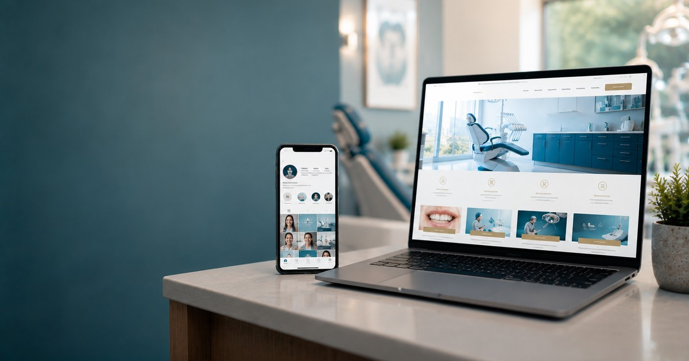
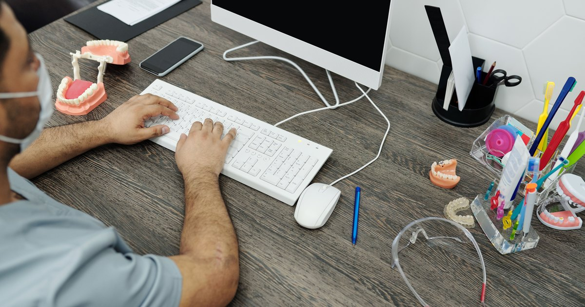

Blog DentalReady
Lo que todo dentista debería saber sobre Google, SEO y su presencia online. Sin tecnicismos, escrito por un dentista.

Las razones reales por las que tu clínica no sale, y qué hacer con cada una para empezar a aparecer.
Leer artículo →
Los rangos reales del mercado, qué encarece o abarata el precio y cómo saber si vale la pena.
Leer artículo →Fallos que espantan pacientes sin que te enteres, y cómo se arreglan uno por uno.
Leer artículo →
El recorrido que hace hoy un paciente antes de llamarte, y los pasos para captar más.
Leer artículo →
"Ya tengo Instagram, ¿para qué quiero web?" Hacen cosas distintas y una sin la otra deja pacientes en el camino.
Leer artículo →
El motivo por el que algunas clínicas aparecen primero en Google y otras quedan invisibles. En simple.
Leer artículo →
La ficha del mapa, paso a paso y actualizada: cómo crearla, verificarla por video y dejarla bien optimizada.
Leer artículo →Cuándo conviene pagar por aparecer arriba, cuánto cuesta en Chile y cuándo es mejor empezar por otro lado.
Leer artículo →No hay número mágico: te explico qué pesa de verdad y cómo conseguir reseñas sin inventarlas.
Leer artículo →
Comparación honesta de las tres, sus costos ocultos y qué le sirve de verdad a una clínica.
Leer artículo →